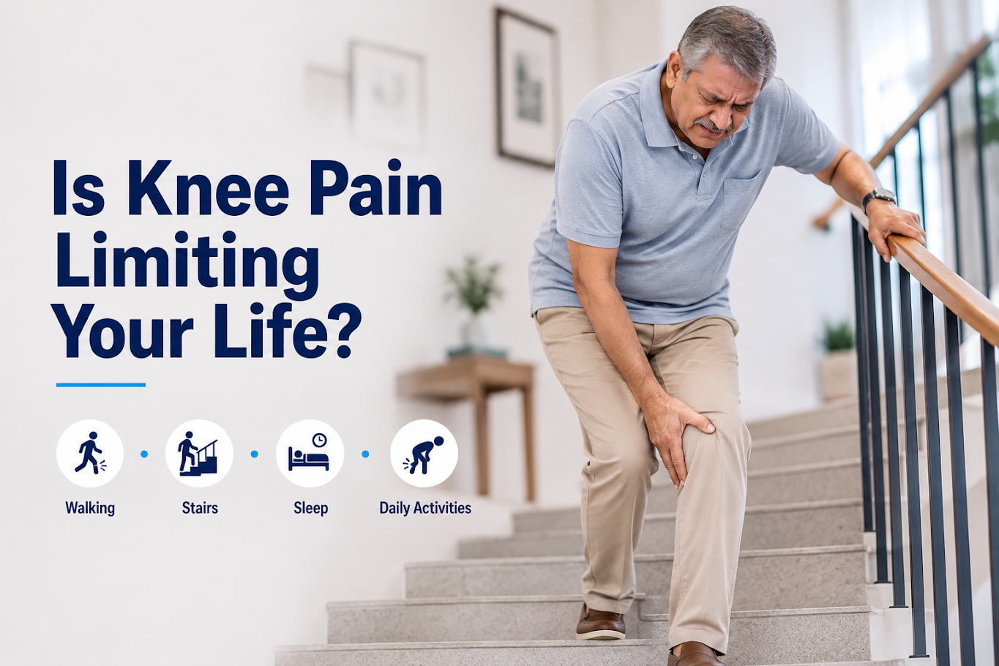
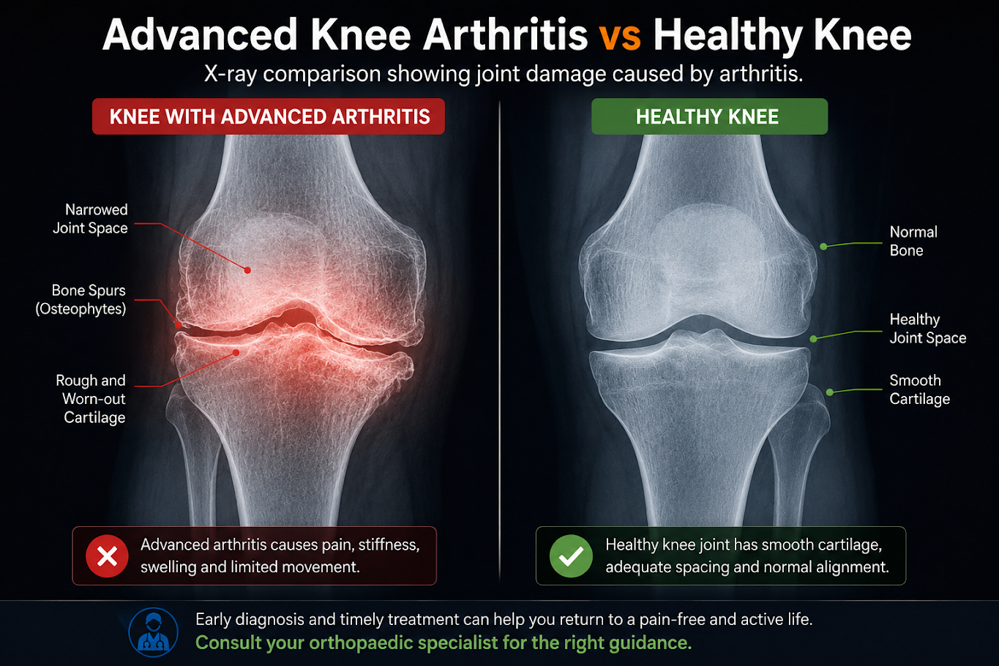
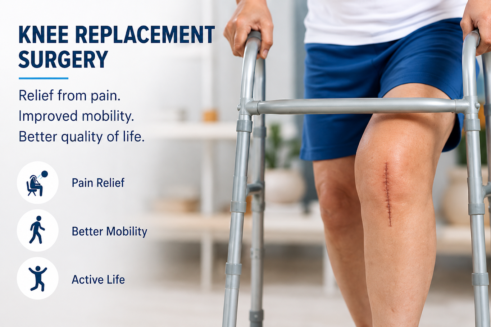

Knee pain can start as a small inconvenience, but over time it can become something that affects almost every part of your daily routine. Walking, climbing stairs, getting up from a chair, or even sleeping comfortably can become difficult when knee arthritis progresses.
Many people continue to live with knee pain for years, assuming that it is simply a normal part of ageing. However, persistent pain, stiffness, swelling, reduced movement and difficulty performing everyday activities can indicate that your knee joint needs a closer evaluation.
But how do you know when ordinary knee pain has progressed to a stage where knee replacement surgery may need to be considered?
Knowing the signs you need a knee replacement can help you recognise when it is time to consult an orthopaedic specialist and understand your treatment options.
Here are 15 important signs you need a knee replacement may be worth discussing with your doctor.
1. Persistent Knee Pain Is Affecting Your Daily Life
One of the most important signs you need a knee replacement is persistent knee pain that interferes with your normal activities.
Knee arthritis may initially cause discomfort only after prolonged walking or physical activity. As joint damage progresses, pain may start occurring during everyday movements such as walking, standing, climbing stairs or getting up from a chair.
If knee pain has become a regular part of your day despite appropriate treatment, it is worth getting your knee evaluated by an orthopaedic specialist.
2. Walking Even Short Distances Causes Significant Pain
If you once enjoyed walking but now experience significant pain after covering a short distance, your knee condition may be becoming increasingly limiting.
You may find yourself walking slowly, taking frequent breaks, avoiding longer distances or looking for somewhere to sit.
A significant reduction in walking ability can be one of the signs you need a knee replacement, particularly when it occurs along with persistent pain and stiffness.
3. You Struggle With Stairs
Climbing or descending stairs can become increasingly difficult as knee arthritis progresses.
You may experience pain when bending your knee, putting weight on the affected leg or moving downstairs. Some people eventually avoid stairs because they are afraid of pain or instability.
Difficulty with stairs alone does not mean you need surgery, but when combined with other knee replacement symptoms, it deserves professional assessment.
4. Getting Up From a Chair Has Become Difficult
Do you need to use your hands to push yourself up from a chair?
Difficulty standing from a seated position can occur when knee pain, stiffness and reduced strength make bending and straightening the joint difficult.
If you regularly avoid low chairs or experience significant pain every time you stand, this can be another of the signs you need a knee replacement to discuss with your doctor.
5. Your Knee Has Become Extremely Stiff
Persistent stiffness can be just as limiting as knee pain.
You may find it difficult to fully bend or straighten your knee, particularly after sitting for a long time or waking up in the morning.
When stiffness progressively limits walking, sitting, standing or other daily activities, an orthopaedic evaluation can help determine whether advanced arthritis is responsible.
6. Your Knee Frequently Swells

Recurring knee swelling may occur because of inflammation or changes within the joint.
You may notice swelling after walking, exercising, standing for long periods or performing activities that put stress on your knee.
Swelling alone is not one of the definite signs you need a knee replacement, but persistent swelling combined with pain, stiffness and reduced mobility should be evaluated.
7. Your Knee Feels Unstable or Gives Way
Does your knee suddenly feel as though it may buckle while walking?
Knee instability can make everyday activities such as walking outdoors, climbing stairs or walking on uneven surfaces difficult and uncomfortable.
If your knee frequently gives way, it is important to identify the underlying cause. In advanced arthritis, instability can occur alongside other symptoms that may eventually lead to consideration of knee replacement.
8. You Feel Grinding or Grating in Your Knee
A grinding, grating or crackling sensation when moving the knee is sometimes called crepitus.
You may notice it while bending or straightening your knee, climbing stairs or squatting.
Grinding alone does not mean you need knee replacement. However, when it occurs together with significant pain, stiffness and restricted movement, it can be an important symptom to discuss with an orthopaedic specialist.
9. Knee Pain Is Disturbing Your Sleep
Knee pain that affects your sleep can have a major impact on your overall quality of life.
You may struggle to fall asleep, turn in bed or find a comfortable position because of knee discomfort.
If persistent knee pain is regularly disturbing your sleep despite appropriate treatment, it may be one of the signs you need a knee replacement evaluation.
10. You Have Stopped Doing Activities You Enjoy
One of the most overlooked signs you need a knee replacement is gradually giving up activities you once enjoyed.
You may have stopped going for walks, travelling, gardening, shopping independently or spending active time with your family.
When knee pain starts deciding what you can and cannot do, it is time to discuss your condition with an orthopaedic specialist.
11. You Increasingly Depend on Pain Medication

If you frequently need medication just to get through your normal routine, your current treatment may no longer be providing sufficient relief.
Medication can help control symptoms, but it does not necessarily address severe structural damage within the knee.
If your dependence on pain medication is increasing, speak with your doctor before changing your medication or considering surgery.
12. Non-Surgical Treatments Are No Longer Providing Enough Relief
Knee replacement is generally not the first treatment for knee arthritis.
Depending on your condition, your doctor may recommend physiotherapy, exercise, medication, weight management where appropriate and lifestyle modifications.
However, if appropriate non-surgical treatments are no longer providing adequate relief and your quality of life remains significantly affected, knee replacement may be discussed.
13. Everyday Activities Are Becoming Increasingly Difficult
Advanced knee problems can affect simple activities that you once performed without thinking.
You may struggle with bathing, dressing, cooking, shopping, using the toilet, getting into a car or walking around your home.
When knee pain starts affecting your independence, it is important to seek professional advice rather than simply adjusting your entire lifestyle around the pain.
14. You Notice Changes in Your Knee Alignment
Advanced knee arthritis can sometimes cause changes in the alignment or appearance of the legs.
You may notice that your legs appear increasingly bow-legged, knock-kneed or misaligned.
A change in appearance alone does not mean you need knee replacement. Your surgeon will consider your symptoms, examination findings, imaging and overall health before recommending treatment.
15. Your Knee Pain Is Taking Over Your Life
Perhaps the biggest of all the signs you need a knee replacement is when your knee begins controlling your lifestyle.
If you are avoiding activities, sleeping poorly, walking less, depending on family members or constantly planning your day around knee pain, it may be time for a detailed orthopaedic evaluation.
The decision about knee replacement should be based on your symptoms, functional limitations, joint condition and response to previous treatment—not simply your age or an X-ray.
When Do Knee Arthritis Symptoms Become Serious Enough for Knee Replacement?
Knee arthritis does not automatically mean that you need knee replacement surgery. The more important question is whether your symptoms have progressed to the point where they significantly affect your mobility, independence and quality of life.
Persistent pain, severe stiffness, difficulty walking, sleep disturbance and reduced ability to perform everyday activities may indicate that your knee condition requires a more detailed evaluation.
When Do You Need a Knee Replacement?
So, when do you need knee replacement?
There is no single age, pain score or symptom that determines when surgery is necessary. Doctors generally consider knee replacement when persistent symptoms significantly affect daily life and appropriate non-surgical treatments no longer provide enough relief.
Your orthopaedic surgeon may consider:
- Severity and duration of knee pain
- Knee stiffness and range of movement
- Walking ability
- Impact on daily activities
- Quality of life
- Clinical examination
- Imaging findings
- Response to previous treatments
- Overall health
When Is Knee Replacement Necessary?
Knee replacement may become an option when chronic symptoms substantially limit your life despite appropriate treatment.
The decision should always be individualised after discussing the potential benefits, risks and alternatives with your orthopaedic specialist.
Does Having Knee Arthritis Mean You Need Knee Replacement?
Having knee arthritis does not automatically mean you need surgery. Many people can manage their symptoms with appropriate non-surgical treatments.
Knee replacement is generally considered when persistent symptoms significantly affect daily life and suitable treatments no longer provide enough relief.
Knee Replacement Surgery: What Happens Before the Procedure?
If your symptoms suggest that knee replacement may be appropriate, your orthopaedic surgeon will perform a detailed assessment.
This may include reviewing your medical history, examining your knee movement, assessing your walking ability and obtaining imaging when appropriate.
Your surgeon will then discuss whether knee replacement surgery is suitable and explain the available treatment options.
Robotic Knee Replacement: Is It an Option?
For patients who are advised to undergo knee replacement, robotic-assisted techniques may be one of the treatment options discussed with their surgeon.
Robotic-assisted knee replacement uses technology to assist with surgical planning and execution. However, it is not automatically suitable for every patient.
Your surgeon will determine whether robotic-assisted surgery is appropriate based on your individual anatomy, joint condition, medical history and treatment goals.
Learn More About Robotic Knee Replacement in Mysore
To understand the procedure, preparation, recovery and commonly asked questions, read our cornerstone guide:
Robotic Knee Replacement in Mysore: Complete Guide
What Should You Do If You Notice These Signs You Need a Knee Replacement?
If you recognise several of the signs you need a knee replacement, do not assume that surgery is automatically your only option.
The first step is to consult an experienced orthopaedic specialist. A proper evaluation can identify the cause of your knee pain and determine whether physiotherapy, medication, lifestyle changes, other treatments or knee replacement may be appropriate.
You do not have to wait until your knee pain becomes unbearable before seeking help.
If knee pain is affecting your mobility, sleep, independence or quality of life, getting an expert opinion can help you make a more informed decision about your treatment.

Conclusion: Recognise the Signs You Need a Knee Replacement
Knowing the signs you need a knee replacement can help you recognise when persistent knee problems require professional attention.
If knee pain is stopping you from walking comfortably, sleeping well, travelling, performing daily activities or enjoying time with your family, do not simply assume that you have to live with it.
The right treatment depends on the cause and severity of your knee condition.
Don't let knee pain decide what you can and cannot do. Get your knee assessed and understand your treatment options.
Frequently Asked Questions About Signs You Need a Knee Replacement
Common signs you need a knee replacement include persistent pain, severe stiffness, difficulty walking or using stairs, instability, sleep disturbance and reduced quality of life. However, these symptoms do not automatically mean surgery is required.
The signs you may need knee replacement include worsening knee pain, reduced walking ability, difficulty performing daily activities and poor response to non-surgical treatment. An orthopaedic assessment is needed to determine the appropriate treatment.
You may need knee replacement when persistent knee symptoms significantly affect your quality of life and appropriate non-surgical treatments no longer provide adequate relief. The decision is individual and should be made with your orthopaedic surgeon.
No. Knee pain can have many causes, including arthritis, injuries and inflammation. A proper diagnosis is necessary before deciding whether knee replacement surgery is appropriate.
The early signs of knee arthritis may include pain during activity, stiffness, swelling, reduced flexibility and grinding sensations. Early arthritis does not necessarily mean that knee replacement will be required.
Knee replacement may be necessary when chronic symptoms substantially affect daily life and suitable non-surgical treatments are no longer effective or appropriate. Your surgeon will assess your individual condition before recommending surgery.
Yes. Depending on the severity of arthritis, treatment may include exercise, physiotherapy, medication, weight management where appropriate and lifestyle modifications. Surgery is considered when symptoms remain significantly limiting.
No. Age alone does not determine whether someone is suitable for knee replacement. Doctors consider symptoms, joint damage, mobility, overall health and quality of life.